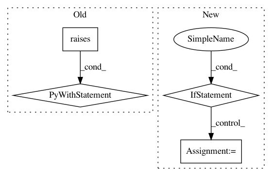

917b734e8db55de1e834aad22b3f8b56c920bc4d,pandas/tests/indexes/interval/test_setops.py,TestIntervalIndex,test_set_incompatible_types,#TestIntervalIndex#Any#Any#Any#,168
Before Change
"can only do set operations between two IntervalIndex objects "
"that are closed on the same side and have compatible dtypes"
)
with pytest.raises(TypeError, match=msg):
set_op(other, sort=sort)
After Change
for other_closed in {"right", "left", "both", "neither"} - {closed}:
other = monotonic_index(0, 11, closed=other_closed)
expected = getattr(index.astype(object), op_name)(other, sort=sort)
if op_name == "difference":
expected = index
result = set_op(other, sort=sort)
tm.assert_index_equal(result, expected)
// GH 19016: incompatible dtypes -> cast to object
In pattern: SUPERPATTERN
Frequency: 4
Non-data size: 4
Instances
Project Name: pandas-dev/pandas
Commit Name: 917b734e8db55de1e834aad22b3f8b56c920bc4d
Time: 2021-01-20
Author: jbrockmendel@gmail.com
File Name: pandas/tests/indexes/interval/test_setops.py
Class Name: TestIntervalIndex
Method Name: test_set_incompatible_types
Project Name: pandas-dev/pandas
Commit Name: 412554b2f06f3782c9336f5a4dfc5bb890219afd
Time: 2021-01-21
Author: jbrockmendel@gmail.com
File Name: pandas/tests/indexes/datetimes/test_insert.py
Class Name: TestInsert
Method Name: test_insert_mismatched_types_raises
Project Name: ray-project/ray
Commit Name: b351d1394087251b119930bf4aaee7a79ef4e55a
Time: 2020-07-17
Author: swang@cs.berkeley.edu
File Name: python/ray/tests/test_reconstruction.py
Class Name:
Method Name: test_basic_reconstruction_put
Project Name: dask/dask-ml
Commit Name: bfe232473eba21df382264c70681d24b49528775
Time: 2019-03-01
Author: dev@stsievert.com
File Name: tests/test_incremental.py
Class Name:
Method Name: test_incremental_basic